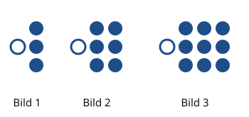

Muster fortsetzen
Mit einem KI-Tutor lernen
Ein KI-Tutor erklärt dir diese Seite und hilft dir bei den Aufgaben. Wähl deinen Assistenten:
Mit Claude öffnen Mit ChatGPT öffnen Mit Mistral Vibe öffnen
Du nutzt dein eigenes Konto beim Anbieter. Der Assistent ist kein Angebot von lernapps.net: lernapps liefert nur Inhalte und Aufgaben. Die Wahl gilt für alle Seiten, nur auf diesem Gerät.
Das nächste Bild vorhersagen
Wenn du ein Muster fortsetzen willst, musst du erkennen, was von Bild zu Bild passiert. Mira und Ben legen für die Wand der Spielecke eine Reihe von Bildern. Jedes Bild hat ein Plättchen am Anfang (hohler Kreis) und dahinter Spalten aus je 3 Plättchen.

© CC-BY-4.0Zähle die Plättchen jedes Bildes. Was ändert sich von Bild zu Bild?
Aufgabe
Lösung
Richtige Antwort: 13
Bild 1 hat 4 Plättchen, Bild 2 hat 7, Bild 3 hat 10. Jedes neue Bild hat 3 Plättchen mehr, also hat Bild 4 genau 10 + 3 = 13.
Wie vergleichst du Muster genau?
Du zählst die Plättchen jedes Bildes. Schreibst du die Anzahlen hintereinander, entsteht eine Zahlenfolge: 4, 7, 10 und so weiter. Jede Zahl der Folge heißt Folgenglied. Das Glied zu Bild 3 ist 10.
- Zahlenfolge
Eine Zahlenfolge ist eine Reihe von Zahlen in fester Reihenfolge. Jede Zahl ist ein Folgenglied. Bei der Wandreihe gehört Bild 1 zum ersten Glied, Bild 2 zum zweiten und so weiter.
Der Abstand zwischen den Gliedern
Damit du eine Folge fortsetzen kannst, suchst du den Abstand. Von 4 zu 7 sind es 3 mehr, von 7 zu 10 wieder 3 mehr. Der Abstand bleibt gleich. Mit diesem Abstand setzt du die Folge fort.
Was tust du, wenn jedes Glied gleich wächst?
Merke
Dann addierst du diese Zahl immer wieder. Bei 4, 7, 10 ist es jedes Mal plus 3.
Übung
Aufgabe
Lösung
Richtige Antwort: 21
Der Abstand ist 4, denn 9 − 5 = 4 und 13 − 9 = 4. Also 17 + 4 = 21.
Aufgabe
Lösung
Richtige Antwort: 19
Der Abstand ist 13 − 7 = 6. Auf 13 folgt also 13 + 6 = 19, und 19 + 6 = 25 stimmt.
Aufgabe
Drei Beispielaufgaben, jede mit ihrer Lösung:
Aufgabe Nr. 1
Eine Folge beginnt mit 1 und wird bei jedem Schritt um 4 größer. Wie heißt das vierte Glied?
Tipp
Das erste Glied ist 1. Wie viele Schritte brauchst du bis zum vierten Glied?
Lösung
- Das erste Glied ist 1. Bis zum vierten Glied gehst du drei Schritte um je 4.
- Das vierte Glied ist 13.
Richtige Antwort: 13
Aufgabe Nr. 2
Eine Folge beginnt mit 5 und wird bei jedem Schritt um 4 größer. Wie heißt das vierte Glied?
Tipp
Das erste Glied ist 5. Wie viele Schritte brauchst du bis zum vierten Glied?
Lösung
- Das erste Glied ist 5. Bis zum vierten Glied gehst du drei Schritte um je 4.
- Das vierte Glied ist 17.
Richtige Antwort: 17
Aufgabe Nr. 3
Eine Folge beginnt mit 7 und wird bei jedem Schritt um 6 größer. Wie heißt das vierte Glied?
Tipp
Das erste Glied ist 7. Wie viele Schritte brauchst du bis zum vierten Glied?
Lösung
- Das erste Glied ist 7. Bis zum vierten Glied gehst du drei Schritte um je 6.
- Das vierte Glied ist 25.
Richtige Antwort: 25
Aufgabe
Lösung
Richtige Antwort: Die Aussage stimmt nicht.
Die Abstände sind 4, 4 und 5. Der letzte Abstand ist anders. Mit demselben Abstand 4 käme nach 11 die Zahl 15.
Das kannst du jetzt
Du kannst eine Folge fortsetzen, wenn du den Abstand findest. Für Bild 10 oder Bild 100 willst du nicht alle Bilder legen. Dafür suchen Mira und Ben auf der nächsten Seite eine Regel.
Fehler gefunden oder eine Idee für diese App?